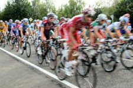
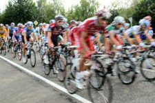

Folgende Ausflüge können Sie an der Rezeption buchen.


 

1. Ballonglühen:
Beim Ballonglühen werden mehrere Heißluftballons am Boden verankert und nach Einbruch der Dunkelheit durch das Befeuern der balloneigenen Gasbrenner zum Glühen gebracht. Die bunten Farben kommen so besonders gut zur Geltung.Ein atemberaubendes Schauspiel für Jung und Alt.
2. Historische Sehenswürdigkeiten der Umgebung
Bei diesem Ausflug fahren wir Sie zu folgenden interessanten Sehenswürdigkeiten der Region:
a) Römersiedlung aus dem 2. Jh. n. Chr.
b) Ruine der Kirche Sankt Peter aus dem 13. Jahrhundert
c) Kloster Maria Hilf mit beeindruckendem gotischen Kreuzgang und gemütlicher Klosterschenke
Die Eintrittspreise der Sehenswürdigkeiten sind im Preis des Ausfluges inbegriffen.
3. Bootsfahrt
Begleiten Sie uns auf eine sachkundig geführte Bootsfahrt durch das Naturschutzgebiet Krötenwiese.
Diese Bootsfahrt ist ein Erlebnis der besonderen Art:
In einem Fischerkahn können Sie bei einem Gläschen Wein die vielfältige Natur hautnah erleben.
4. 2-Tage-Ausflug zur Tour de France
Wir sind live beim größten Radrennen dabei. Die Anreise erfolgt am Nachmittag, und wir übernachten in einer netten Pension an der Route, um dann am darauffolgenden Tag ganz vorne mit dabei zu sein.